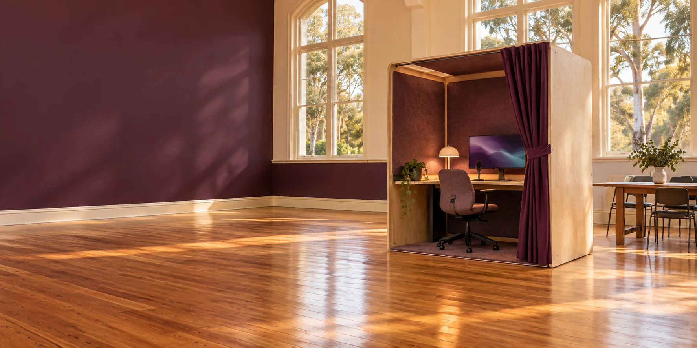

06 / EVERY PUBLIC CHAPTER
Find your
way through.
Begin with an interest. Follow the chapters in sequence or choose the part you need.
Seven chapters. Your own route.
- 01
Welcome
Explore Verse Box: a proposed lower-cost public demonstration for personal Aura building, Community Hours and community participation on Minjerribah and across Redlands.
- 02
The experience
What a first Verse Box visit could involve: explore an interest, review a sourced result and continue on your own device.
- 03
Your Aura
Aura is a proposed personally directed AI environment connecting memories, values, skills and projects, with chosen permissions and portable records.
- 04
C-Hours & community
Understand Community Hours, voluntary contribution, P4A and locally shaped cooperation through the Verse Box public trial proposal.
- 05
The proposed trial
What the proposed Verse Box trial needs: hosts, reusable equipment, access, tested permissions, local agreements and an honest review of outcomes and costs.
- 06
Documents & sources
Download the corrected Verse Box proposal, inspect the source bibliography and links, and find project provenance, rights and Luke Nathan Hayes references.
- 07
Sitemap
Every page of the Verse Box public guide, from a first visit and personal Aura to C-Hours, the proposed trial and original documents.
No matching chapters. Try another word or clear the search.
A guide you can follow and share.
Each chapter has previous and next links, an all-pages menu and a return-to-top button. The complete guide remains readable without JavaScript.
XML sitemap · Machine-readable guide · Rights and attribution